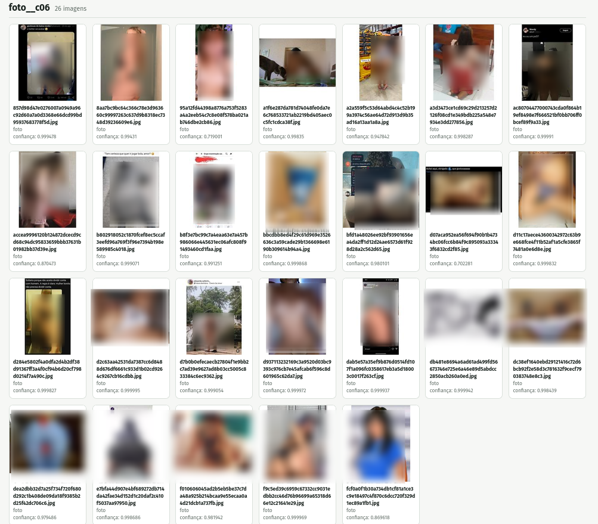
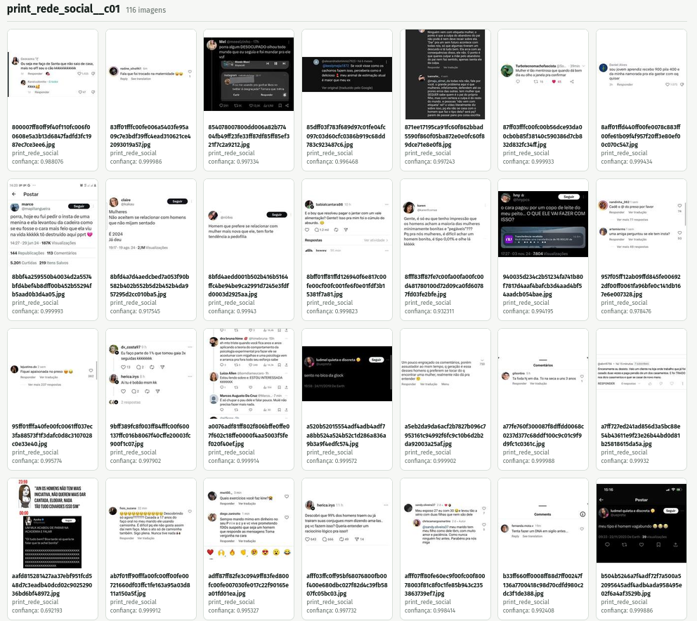
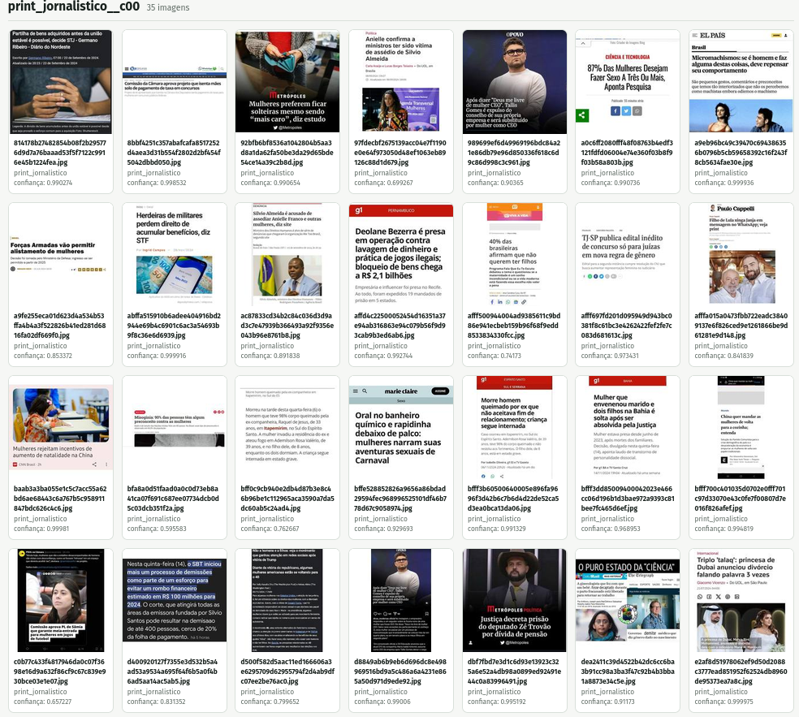
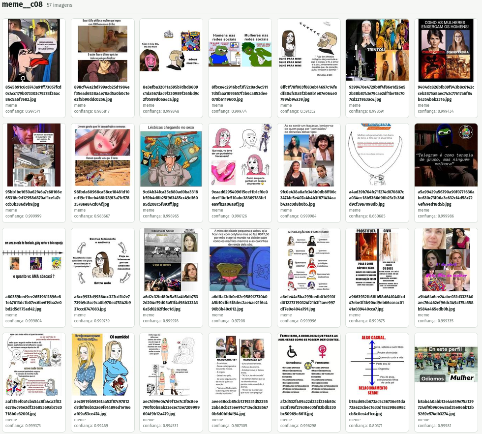

O deslocamento generativo no giro digital
IA, agentes e reconfiguração epistêmica nas humanidades
![]()
(UNILAB • PPGIHD/UFRRJ • LABHDUFBA)
Nota sobre o uso de IA generativa
Esta apresentação foi estruturada, redigida e formatada com assistência do Hermes Agent, utilizando o modelo de linguagem gpt-5.6-luna no dia 10 de novembro de 2026.
A supervisão, as escolhas editoriais, a análise, a argumentação e a responsabilidade intelectual são de Eric Brasil.
Ponto de partida
A IA generativa não é apenas uma nova ferramenta digital.
Ela desloca:
- as operações da pesquisa;
- a relação entre fontes, dados e interpretação;
- a divisão do trabalho intelectual;
- as condições materiais de produção do conhecimento.
“Desculpe, Dave. Não posso fazer isso.”

Nem tínhamos discutido o giro digital e sofremos um capotamento pela tal da IA generativa.
O giro digital ampliou a capacidade de localizar, organizar e relacionar vestígios.
O deslocamento generativo acrescenta sistemas capazes de produzir operações intermediárias de pesquisa.
A desconfiança com o digital
Por que o digital ainda produz desconfiança nas humanidades?
- retorno aparente ao positivismo e à quantificação;
- vieses, racismo algorítmico e reprodução de desigualdades;
- sistemas opacos (black boxes);
- confusão entre volume de dados e qualidade da evidência.
O problema não é usar dados digitais
O problema é tratar escala e visualizações como sinônimo de conhecimento.
- dados são produzidos por instituições e infraestruturas;
- bases são recortadas, indexadas e hierarquizadas;
- modelos carregam regularidades e ausências dos seus dados;
- toda saída exige crítica de fonte, contexto e método.
Do instrumento ao ambiente epistêmico
No giro digital, a ferramenta podia ser pensada como extensão do método.
Com a IA generativa, o sistema passa a:
- resumir e classificar;
- recuperar trechos e relações;
- propor hipóteses;
- escrever código e executar tarefas;
- coordenar uma sequência de operações.
Do instrumento ao ambiente epistêmico
A questão deixa de ser apenas “qual ferramenta usar?”.
Passa a ser: que ambiente de produção do conhecimento estamos construindo?
A virada generativa
- Todo mundo já conversou com um chatbot?
- Quais vocês usam? ChatGPT, Claude, Gemini, DeepSeek?
- Chatbots são apenas a interface mais visível.
- Recebiam texto, devolviam texto. Hoje também estão se “agentificando”. Vocês notaram?
A virada generativa
O deslocamento relevante ocorre quando LLMs deixam de ser usados somente para conversar e passam a integrar:
- fluxos de trabalho;
- bases documentais;
- APIs e ferramentas;
- rotinas de análise e verificação.
Hermenêutica digital aumentada
- infraestrutura de armazenamento, indexação e recuperação;
- corpus digital;
- agentes de IA elaborados com skills de pesquisa;
- modelos de linguagem especializados;
- protocolos de validação e auditoria;
- registro das decisões e dos limites.
Hermenêutica digital aumentada
O ganho não está em delegar a interpretação, ou em acelerar o processo apenas.
Está em ampliar o espaço de perguntas que o pesquisador consegue formular e testar.
Exemplo 1 - RAG: aproximar resposta e fonte
Retrieval-Augmented Generation combina um modelo de linguagem com uma base documental.
- documentos são carregados e indexados;
- a pergunta recupera trechos relevantes;
- o modelo produz uma resposta apoiada nesses trechos;
- o pesquisador verifica fonte, contexto e ausência.
Exemplo 2 - Agentes de IA: sistema integrado de pesquisa
Um agente combina modelos de linguagem, ferramentas ou habilidades específicas, memória de curto prazo (contexto), memória de longo prazo (base documental e/ou base de sessões), regras e protocolos de ação, auditoria e registro de decisões.
O que um agente pode fazer?
- buscar na web e consultar APIs;
- ler e transformar arquivos;
- executar código;
- repetir etapas com critérios definidos;
- produzir registros intermediários para auditoria.
- receber guardrails e protocolos de ação.
- receber instruções teóricas e metodológicas.
Agentes: autonomia?

Autonomia operacional não é autonomia epistêmica.
O que muda para as humanidades?
- A pesquisa pode passar de uma sequência manual de tarefas para um sistema de operações parcialmente automatizadas.
- Ampliação do espaço de perguntas e hipóteses que podem ser testadas.
- Velocidade, volume e complexidade dos dados pode ser superada com sistemas de recuperação, classificação e análise.
Novas demandas para as humanidades?
- INTERDISCIPLINARIDADE = urgência;
- conhecimento técnico especializado;
- transparência, versionamento, auditoria;
- distinguir sugestão, evidência e interpretação;
- infraestrutura de armazenamento e processamento;
- APIs abertas e documentadas;
- financiamento continuado;
LABHDUFBA: desinformação e discursos de ódio nas redes sociais
- corpus de grande escala, coletado em tempo real;
- dados de telegram, YouTube, Instagram, Whatsapp, Discord, Roblox;
- mais de 70 milhões de mensagens;
- cerca de 4 milhões de imagens;
- cerca de 1 milhão de vídeos;
- cerca de 30 TB de dados.
A escala e a velocidade de produção de dados torna impossível uma leitura exclusivamente manual.
Clusterização de imagens




Infraestrutura também é política do conhecimento
Uma agenda mínima inclui:
- servidores públicos e armazenamento federado;
- APIs abertas para pesquisa;
- créditos de uso de modelos;
- plataformas auditáveis de preservação;
- formação em História Digital e métodos computacionais.
- debates sobre impactos ambientais, privacidade e segurança.
Conclusão
O deslocamento generativo reconfigura a pesquisa em três níveis:
- Operacional — automatiza tarefas e conecta ferramentas.
- Metodológico — exige novos protocolos de validação e auditoria.
- Epistêmico — altera a relação entre evidência, interpretação e agência.
Obrigado


Eric Brasil | VI Seminário Internacional Interdisciplinar em Cultura e Sociedade